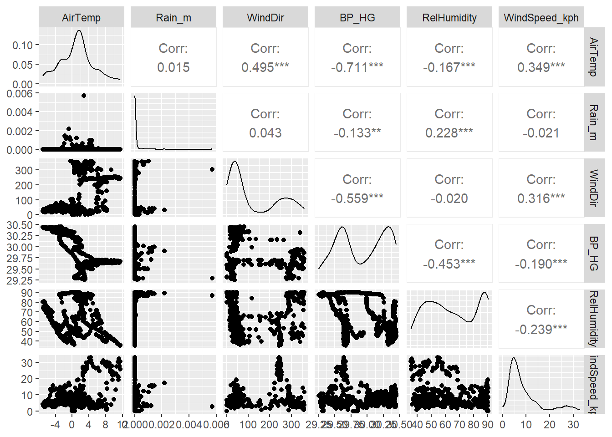

library(tidyverse)
library(ggplot2)
library(GGally)
library(lubridate)
source("get_rice_data.R")
data <- getRiceData()Correlation Assignment
Question 1
Look up the library GGally; it has a function named ggpairs(). Use that function to plot the atmospheric data from the Rice Rivers Center for the samples collected from 10 February to 15 February.
data$Date <- ymd_hms(data$Date)
atmdf <- data |>
filter(month(Date) == 2 & day(Date) >= 10 & day(Date) <= 15) |>
select(AirTemp, Rain_m, WindDir, BP_HG, RelHumidity)
ggpairs(
data = atmdf,
columns = 1:ncol(atmdf)) 
Question 2
For those atmospheric data, which pair of variables has the strongest correlation? What is the 95% confidence interval on that correlation coefficient?
# Calculate correlation matrix for the variables in atmdf
cor_matrix <- cor(atmdf, use = "complete.obs")
# Convert the correlation matrix to a data frame for easier identification of the strongest correlation
library(dplyr)
cor_df <- as.data.frame(as.table(cor_matrix)) %>%
filter(Var1 != Var2) %>% # Remove diagonal (self-correlations)
mutate(abs_correlation = abs(Freq)) %>% # Take absolute value of correlations
arrange(desc(abs_correlation)) # Sort by absolute correlation
# Identify the pair with the strongest correlation
strongest_pair <- cor_df[1, c("Var1", "Var2")]
strongest_corr_value <- cor_df[1, "Freq"]
# Calculate 95% confidence interval for the strongest correlation
cor_test_result <- cor.test(atmdf[[strongest_pair$Var1]], atmdf[[strongest_pair$Var2]])
# Print the results
cat("The strongest correlation is between", strongest_pair$Var1, "and", strongest_pair$Var2, "\n")The strongest correlation is between 4 and 1 cat("Correlation coefficient:", strongest_corr_value, "\n")Correlation coefficient: -0.7111976 cat("95% confidence interval:", cor_test_result$conf.int[1], "to", cor_test_result$conf.int[2], "\n")95% confidence interval: -0.7495441 to -0.6680938 Question 3
Using the first 40 observations in air temperature and barometric pressure from the Rice Center data set, determine if they are individually distributed as normal random variables.
# Subset the first 40 observations of AirTemp and BP_HG
sample_data <- data[1:40, ]
# Visual check with Q-Q plots
par(mfrow = c(1, 2)) # Set up a 1x2 plot layout
qqnorm(sample_data$AirTemp, main = "Q-Q Plot of AirTemp")
qqline(sample_data$AirTemp, col = "red")
qqnorm(sample_data$BP_HG, main = "Q-Q Plot of BP_HG")
qqline(sample_data$BP_HG, col = "red")# Statistical check with Shapiro-Wilk test
shapiro_test_AirTemp <- shapiro.test(sample_data$AirTemp)
shapiro_test_BP_HG <- shapiro.test(sample_data$BP_HG)
# Print Shapiro-Wilk test results
cat("Shapiro-Wilk test for AirTemp:\n")Shapiro-Wilk test for AirTemp:print(shapiro_test_AirTemp)
Shapiro-Wilk normality test
data: sample_data$AirTemp
W = 0.96246, p-value = 0.2031cat("\nShapiro-Wilk test for BP_HG:\n")
Shapiro-Wilk test for BP_HG:print(shapiro_test_BP_HG)
Shapiro-Wilk normality test
data: sample_data$BP_HG
W = 0.89733, p-value = 0.001601The Shapiro-Wilk test indicates that AirTemp is likely normally distributed (p = 0.2031), as we do not reject the null hypothesis of normality. However, BP_HG is not normally distributed (p = 0.0016), as the test shows a significant deviation from normality. Thus, normality-based analyses may be appropriate for AirTemp but not for BP_HG.
Question 4
Given your findings in the last question, what kind of correlation statistic would be most appropriate for estimating the correlation between this subset of data?
Given that AirTemp appears to be normally distributed but BP_HG does not, a non-parametric correlation statistic would be most appropriate. Specifically, the Spearman rank correlation or Kendall’s tau would be suitable choices, as they do not assume normality and are robust to non-normal distributions.
Question 5
Look at a qqnorm() plot of the barometric pressure data you used in the previous example. Is there something that “looks” odd with these data? Explain why those data are the way they are.
In the Q-Q plot for BP_HG (barometric pressure data), there’s an unusual pattern where all the points fall on a straight vertical line, indicating that all values are nearly identical or have very little variability. This is unusual because, in typical data, you would expect some spread in the quantiles.
This pattern suggests that the BP_HG data might be nearly constant, possibly due to measurement limitations, a data entry error, or because it was recorded during a period with very stable atmospheric conditions, leading to almost identical barometric pressure readings. This lack of variability is likely why the Shapiro-Wilk test flagged BP_HG as non-normal—it essentially behaves like a single value, which does not conform to a normal distribution.
Question 6
Using a permutation approach, define the distribution of correlation values between the variables in #3, assuming that the NULL hypothesis is true. Plot these as a histogram and include the observed correlation.
set.seed(42) # For reproducibility
# Step 1: Calculate the observed correlation
observed_corr <- cor(sample_data$AirTemp, sample_data$BP_HG, method = "spearman")
# Step 2-4: Permutation test
n_permutations <- 1000
permuted_corrs <- numeric(n_permutations)
for (i in 1:n_permutations) {
# Permute BP_HG values
permuted_BP_HG <- sample(sample_data$BP_HG)
# Calculate the correlation with AirTemp
permuted_corrs[i] <- cor(sample_data$AirTemp, permuted_BP_HG, method = "spearman")
}
# Step 5: Plot the distribution
hist(permuted_corrs, breaks = 30, main = "Permutation Distribution of Correlation (Null Hypothesis)",
xlab = "Correlation", xlim = range(c(permuted_corrs, observed_corr)), col = "lightblue", border = "black")
abline(v = observed_corr, col = "red", lwd = 2, lty = 2)
legend("topright", legend = paste("Observed Correlation =", round(observed_corr, 3)),
col = "red", lty = 2, lwd = 2)